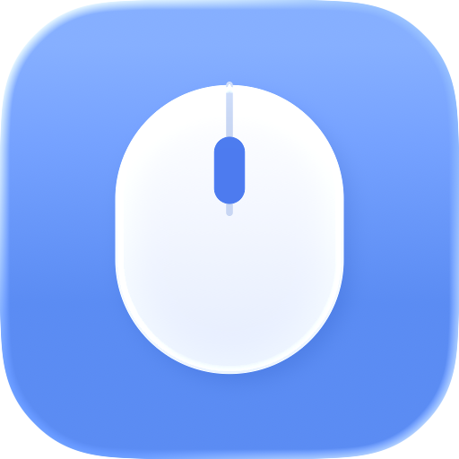

마우스 휠을 트랙패드처럼 부드럽게. 마우스와 트랙패드의 스크롤 방향은 따로.
macOS 전용 다운로드Soft Mouse를 켜면 일반 휠 마우스로도 트랙패드와 같은 스크롤 움직임을 얻습니다.
트랙패드는 자연스럽게, 마우스 휠은 반대로. macOS가 못 하는 일을 대신합니다.
휠 한 칸을 미끄러지는 움직임으로 바꿉니다. 거리와 부드러움을 취향대로 조절합니다.
회사 마우스와 집 마우스가 달라도 각자 설정을 기억합니다. 연결하면 자동으로 인식합니다.
터미널은 원래대로, 브라우저는 부드럽게. 앱마다 끄거나 거리를 따로 정합니다.
혜성 꼬리, 반짝이, 색종이, 그리고 니모·치즈냥이·시바견이 커서를 따라다닙니다. 커서를 잃어버릴 일이 없습니다.
새 버전이 나오면 앱이 알려주고, 확인 버튼 한 번으로 설치까지 끝냅니다.